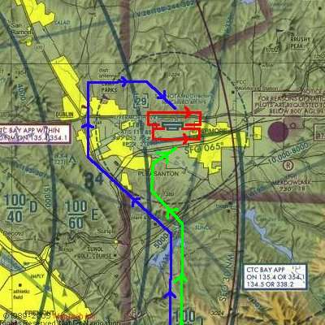

This tutorial simulates a cross-country flight from Red-Hillview (KRHV) to Livermore (KLVK) under Visual Flight Rules (VFR). Both airports are included in the standard FlightGear package, so no additional scenery is required.
I'll assume that you are happy taking off, climbing, turning, descending and landing in FlightGear. If not, I'd recommend Eric Brasseur's very good tutorial. This tutorial is designed to follow on from that and provide information on some of the slightly more complicated flight systems and procedures.
A quick dislaimer. I'm not a pilot. Most of this information has been gleaned from various non-authoritive sources. If you find an error or misunderstanding, please let me know. Mail me at stuart_d_buchanan -at- yahoo.co.uk.
Before we begin, we need to plan our flight. Otherwise we'll be taking off not knowing whether to turn left or right.
First, have a look at the Sectional for the area. This is a map for flying showing airports, navigational aids, and obstructions. They are available from pilot shops, or on the web from various sources. http://mapserver.maptech.com/ has a Aernautical Chart tab which allows them to be viewed quite easily.
Some links to useful sectionals for the flight:
So, how are we going to fly from Reid-Hillview to Livermore?
We'll be taking off from runway 31R at KRHV. KRHV is the ICAO code for Reid Hillview airport, and is shown in the FlightGear wizard. (It is marked on the sectional as RHV for historic reasons. To get the ICAO code, simply prefix a "K").
The 31 indicates that the magnetic heading of the runway is around 310 degrees, and the R indicates that it the runway on the right. As can be seen from the sectional, there are two parallel runways at KRHV. This is to handle the large amount of traffic that uses the airport. Each of the runways can be used in either direction. Runway 31 can be used from the other end as runway 13. So, the runways available are 13R, 13L, 31R, 31L. Taking off and landing is easier done into the wind, so when the wind is coming from the North West, runways 31L and 31L will be in use. The name of the runway is written in large letters at the end and is easily seen from the air.
Once we take off we'll head at 350 degrees magnetic towards Livermore (KLVK). We'll fly at about 3,500ft about sea-level. This puts us at least 500ft above any terrain or obstructions like radio masts on the way.
We'll fly over the Calaveras Reservoir then the San Antonio Reservoir. These are both large bodies of water and we can use them as navigation aids to ensure we stay on the right track.
Once we get about 10 miles out of Livermore (the San Antonia Reservoir), we'll contact the Livermore Air Traffic Control (ATC) to find out where we should land. We'll then join the circuit and land.
OK, we know where we're going and how we'll get there. Time to get going.
Start FlightGear using the Wizard (or command-line if you prefer). We want to use a C172P, take off from runway 31R at Reid Hillview of Santa Clara County (KRHV). Dawn is a nice time to fly in California.
If you want, you can fly in the current weather at KRHV by clicking the Advanced button on the final screen of the Wizard, selecting Weather from the left-hand pane, selecting "Fetch real weather" and clicking OK.
Before we take off, we need to pre-flight the aircraft. In the real world, this consists of walking around the aircraft to check nothing has fallen off, and checking we have enough fuel.
In our case, we'll take the opportunity to check the weather, set our altimeter and pre-set things that are easier to do when your not flying.
The weather is obviously important when flying. We need to know if there is any sort of cross-wind that might affect take-off, at what altitude any clouds are (this is a VFR flight - so we need to stay well away from clouds at all times), and any wind that might blow us off course.
We also need to calibrate out altimeter. Altimeters calculate the current alititude indirectly by measuring air pressure, which decreases as you ascend. However, weather systems can affect the air pressure and lead to incorrect altimeter readings, which can be deadly if flying in mountains.
Conveniently, airports broadcast the current sea-level pressure along with useful weather and airport information over the ATIS. This is a recorded message that is broadcast over the radio. However, to listen to it, we need to tune the radio to the correct frequency.
The ATIS frequency is displayed on the sectional (look for "ATIS" near the airport), but is also available from within FlightGear. To find out the frequencies for an airport (including the tower, ground and approach if appropriate), use the ATC/AI menu and select Frequencies. Then enter the ICAO code (KRHV) into the dialog box. The various frequencies associated with the airport are then displayed. Duplicates indicate that the airport uses multiple frequencies for that task, and you may use either.
Either way, the ATIS frequency for Reid-Hillview is 125.2MHz.
We now need to tune the radio. The radio is located in the Radio Stack to the right of the main instruments. There are actually two independent radio systems, 1 and 2. Each radio is split in two, with a communications (COMM) radio on the left, and a navigation (NAV) radio on the right. We want to tune COMM1 to the ATIS frequency.
The radio has two frequencies, the active frequency, which is currently in use, and the standby frequency, which we tune to the frequency we wish to use next. The active frequency is shown on the left 5 digits, while the standby frequency is shown on the right. We change the standby frequency, then swap the two over, so the standby becomes active and the active standby. This way, we don't lost radio contact while tuning the radio.
To change the frequency, click on the grey knob below the standby frequency (highlighted above), just to the right of the "STBY". Using the left mouse button changes the number after the decimal place, using the middle button changes the numbers before the decimal place. Click on the right side of the button to change the frequency up, and the left of the button to change the frequency down. Most of the FlightGear cockpit controls work this way. If you are having difficulty clicking on the correct place, press Ctrl-C to highlight the hot-spots for clicking.
Once you have changed the frequency to 125.2, press the white button between words "COMM" and "STBY" to swap the active and standby frequencies (highlighted above). After a second or so, you'll hear the ATIS information.
Listen for the "Altimeter" setting. If you are not using "real weather", the value will be 2992, which is standard and already set on the plane. If you are using "real weather", then the altimeter value is likely to be different. We therefore need to set the altimeter to the correct value. To do this use the knob at the bottom left of the altimeter (circled in red in the image above), in the same way as you changed the radio frequency. This changes the value in the little window on the right of the altimeter, which is what you are trying to set, as well as the altitude displayed by the altimeter.
The other way to set the altimeter is to match it to the elevation above sea-level of the airport. The elevation is listed on the sectional. For KRHV it is 133ft. This means you can double-check the pressure value reported over ATIS.

We will also take the opportunity to set the heading bug on the compass to 350 - our bearing from KRHV to KLVK. To do this, use the the red button on the compass housing (highlighted in the image above), just as you've done before. Use the left mouse button for small adjustments, and middle mouse button to make big adjustments. The value of 350, is just anti-clockwise of the labeled value of N (North - 0 degrees).
OK, now we've done that we can actually take off!. In my case this usually involves weaving all over the runway, and swerving to the left once I've actually left the ground, but you'll probably have better control than me. Once above 1000ft, make a gentle turn to the right to a heading of 350 degrees. As we've set the heading bug, it will be easy to follow. We're aiming for a fairly prominent valley.
Continue climbing to 3,500 ft at around 500-700 fpm. Once you reach that altitude, reduce power, level off to level flight and trim appropriately. Check the power again and adjust to it is in the green arc. We shouldn't run the engine at maximum RPM except during take-off.
OK, we've taken off and are on our way to Livermore. Now we can make our life a bit easier using the autopilot and our plane more fuel efficient by tuning the engine. We'll also want to check we're on-course
We can make our life a bit easier by handing some control of the aircraft over to "George" - the autopilot.
The autopilot panel is located towards the bottom of the radio stack. It is easily distinguishable as it has many more buttons than the other components on the stack. It can work in a number of different modes, but we are only interested in one of them for this flight - HDG. As the names suggest, HDG will cause the autopilot to follow the heading bug on the compass, which we set earlier.
To set the autopilot, press the AP button to switch the autopilot on, then press the HDG button to activate heading mode.
While the autopilot is switched on, it will use the trim controls to keep the plane on the heading. You can change the heading bug, and the autopilot will maneuver appropriately. However, the autopilot doesn't make any allowances for wind speed or direction, it only sets the heading of the airplane. If flying in a cross-wind, the plane may be pointed in one direction, but be travelling in quite another.
You should use the trim controls to keep a level flight. You can use the autopilot for this, but it is a bit more complicated.
Once the aircraft has settled down under the autopilot's control, we can pay more attention to the outside world and higher level tasks.

As we noted above, we're going to be traveling over a couple of reservoirs. When you leveled off, the first (Calaveras) was probably right in front of you. You can use them to check your position on the map. If it looks like you're heading off course, twist the heading bug to compensate.
As altitude increases, the air gets thinner and contains less oxygen. This means that less fuel can be burnt each engine cycle. The engine in the C172 is simple and doesn't automatically adjust the amount of fuel to compensate for this lack of oxygen. This results in inefficient fuel burn and a reduction in power because the fuel-air mixture is too "rich". We can control the amount of fuel entering the engine every cycle using the mixture control. This is the red lever next to the throttle. By pulling it out, we "lean" the mixture. We don't want the mixture too rich, nor too lean. Both these conditions don't produce as much power as we'd like. Nor do we want it perfect, because this causes the fuel-air to explode, rather than burn in a controlled manner, which is a quick way to trash an engine.
The mixture is controlled by the red lever to the right of the yoke. You may need to pan your cockpit view to see it.
To pan the cockpit view, right-click with the mouse-button within the FlightGear window until the cursor becomes a double-headed arrow (<->). Moving the mouse now pans the view. Once you can see the mixture lever clearly, right-click again to change the mouse back to the normal arrow.
Pull the mixture lever out slowly (use Crtl-C to see the hot spots), leaning the mixture. As you do you'll see various engine instruments (on the left of the panel) change. Fuel flow will do down (we're burning less fuel), EGT (Exhaust Gas Temperature) will go up (we're getting closer to a "perfect" mixture") and RPM will increase (we're producing more power). Pull the mixture lever out until you see the EGT go off the scale, then then push it in a bit. We're now running slightly rich of peak. While at 3,500ft we don't need to lean much, at higher altitudes leaning the engine is critical for performance.
Once you reach the second reservoir (the San Antonio Reservoir), we need to start planning our descent and landing at Livermore. Landing is a lot more complicated than taking off, assuming you want to get down in one piece, so you may want to pause the simulator (press "p") while reading this.
In the Real World, we'd have been in contact with Air Traffic Control (ATC) continually, as the Bay Area is quite congested in the air as well as on the ground. ATC would probably provide us with a "flight following" service, and would continually warn us about planes around us, helping to avoid any possible collisions. The FlightGear skies are generally clear of traffic, so we don't need a flight following service. If you want to change the amount of traffic in the sky, you can do so from the AI menu. Livermore Airport is Towered (towered airports are drawn in blue on the sectional), so we will need to communicate with the tower to receive instructions on how and where to land.
Before that, we should listen to the ATIS, and re-adjust our altimeter, just in case anything has changed. This is quite unlikely on such a short flight, but if flying hundreds of miles, might make a difference. To save time when tuning radios, you can access the Radio Settings dialog from the Equipment menu. The Livermore ATIS frequency is 119.65.
An ATIS message also has a phonetic letter (Alpha, Bravo - Zulu) to identify the message. This phonetic is changed each time the recorded message is updated. When they first contact a tower, the pilot mentions the identifier, so the tower can double-check the pilot has up to date information.
As well as the altitude and weather information, the ATIS will also say which runway is in use. This is useful for planning our landing. Normally, due to the prevalent Westerly wind, Livermore has runways 25R and 25L in use.
Once you've got the ATIS, tune the radio to Livermore Tower. The frequency is 118.1MHz.
Depending on the level of AI traffic you have configured on your system, you may hear Livermore Tower talking to other aircraft that are landing or departing. This information is not played over the speakers, it is only displayed on the screen.
Once the frequency goes quiet, press the ' key. This will bring up the ATC menu. Click on the radio button on the left to select what you wish to say (you only have one option), then OK.
Your transmission will be displayed at the top of the screen. It will indicate who you are (type and tail number), where you are (e.g. 6 miles south), that you are landing, and the ATIS you have.
After a couple of seconds, Livermore Tower will respond, addressing you by name and telling you what runway to use, which pattern is in use and to when to contact them, for example
"Golf Foxtrot Sierra, Livermore Tower, Report left downwind runway two five left".
To understand what this means, we'll have to describe the Traffic Pattern.
With the number of aircraft flying around, there have to be standard procedure for take-off and landing, otherwise, someone might try to land on-top of an aircraft taking off.
The Traffic Pattern is a standard route aircraft must follow when near an airport, either taking off or landing. The traffic pattern has four stages (or "legs"), shown in the diagram below. The "downwind" mentioned above refers to one of these.
Most patterns at left-handed, i.e. all turns are to the left,as described above. Right-hand patterns also exist, and are marked as "RP" on the sectional. ATC will also advise you what pattern is in use.

We're approaching Livermore airport from the South, while the runways run East/West. Due to the prevailing Westerly wind, we'll usually be directed to either runway 25R or 25L. 25R uses a right-hand pattern, while 25L uses a left-hand pattern. Both the patterns are illustrated in red above. Depending on the runway we've been assigned, we'll approach the airport in one of two ways. If we've been asked to land on runway 25R, we'll follow the blue line in the diagram below. If we've been asked to land on runway 25L, we'll follow the green line.
We also need to reduce our altitude. We want to end up joining the pattern at pattern altitude, about 1,000ft above ground level (AGL). Livermore airport is at 400 ft above sea-level (ASL), so we need to descend to an altitude of 1400 ASL.
We want to begin our manuevers well before we reach the airport. Otherwise we're likely to arrive too high, too fast, and probably coming from the wrong direction. Not the best start for a perfect landing :).
So, lets start descending immediately. First switch off the autopilot by pressing the AP switch. Next, set the plane up for descent. Mixture should be returned to fully rich (pushed right in) and power reduced quite a bit. Now drop the nose a bit. You'll start descending and will speed up. You can use trim to control your descent rate.
You'll probably already be over the San Antonio Reservoir, or possibly past it, so turn to the left as you descend and go towards the town of Pleasanton. You should be able to make out the airport to your right.
Use your location relative to the airport and the two towns of Pleasanton and Livermore to navigate yourself to the pattern following the general guide above.
Once you're established on the downwind you'll need to report to ATC again. Do this in the same way as before. They will then tell you where you are in the queue to land. "Number 1" means there are no planes ahead of you, while "Number 9" means you might want to go to a less busy airport! They'll also tell you who is ahead of you and where. For example "Number 2 for landing, follow the Cessna on short final" means that there is a single aircraft in front of you that is currently on the final leg of the pattern. When they land and are clear of the runway, they'll tell ATC, who can then tell you "Number 1 for landing".
Once on final, you'll notice two sets of lights on the left of the runway (enhanced in the image above). This is the VASI and provides a nice visual clue as to whether you're too low or too high on approach. Each set of lights can either be white or red. White means too high, red means too low. White and red means just perfect. On a Cessna approaching at 60kts, a descent rate of about 500fpm should be fine. If you are too high, just decrease power to increase your descent rate to 700fpm. If you are too low, increase power to decrease your descent rate to 200fpm.
If for some reason it looks like you're going to mess up the landing, you can either take advantage of the fact that this isn't real life, hustle the plane down, touch down half-way down the runway with one wheel on the grass and use the brakes to bleed off 60kts of speed (well, that's what usually happens to me...), or you can abort the landing and try again. To do this, apply full power, lift your flaps, then tell ATC you've made a missed approach. Now simply fly straight over the runway to the crosswind leg and rejoin the pattern at pattern altitude. Fly the complete pattern, telling ATC when you are on downwind, and try again.
Once you're on the ground, you should taxi off the runway then tell ATC you are clear. Find somewhere nice to park, shutdown the engine by pulling mixture to full lean, then throttle off and magnetos to off (knob on the bottom left of the panel). Switch off the avionics master switch, tie down the aircraft, then go get that hamburger!
I hope this tutorial is of some use. If you have any comments, please let me know at stuart_d_buchanan {at} yahoo.co.uk.